Novo MMORPG
Disponível em 1º de Outubro
THRONE AND LIBERTY é um MMORPG que combina aventura rica em narrativa e jogabilidade focada em Guildas com o vasto e persistente mundo de Solisium. O jogo apresenta paisagens geográficas em constante mudança e recursos ambientais que alteram drasticamente o curso da jogabilidade. Uma ampla gama de conteúdo aguarda os jogadores, incluindo Modos Jogador versus Jogador (JxJ) em escala massiva, conteúdo Jogador versus Ambiente (JxA), como Masmorras Cooperativas e Chefes de mundo aberto, uma variedade de Habilidades, como Pesca e Culinária, e um mundo misterioso para explorar por conta própria ou com amigos.
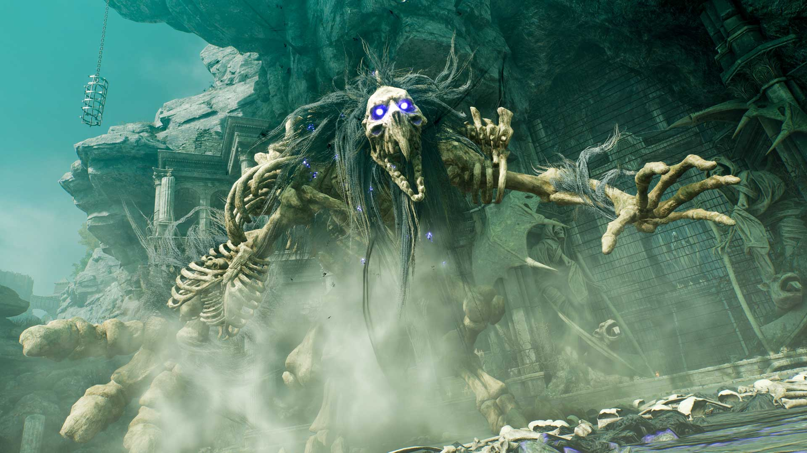
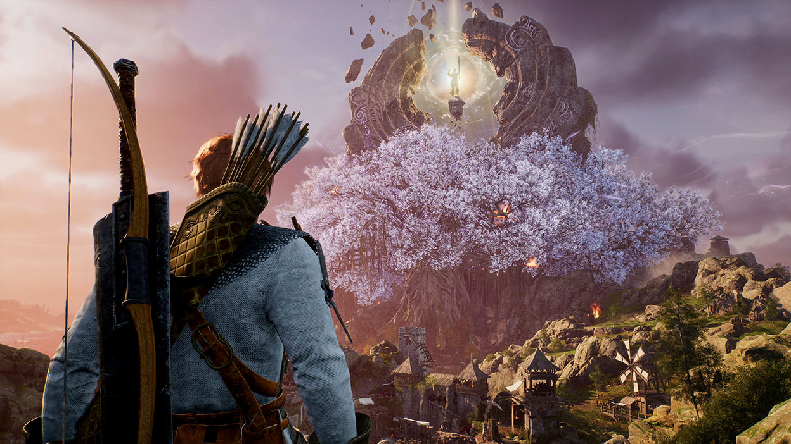
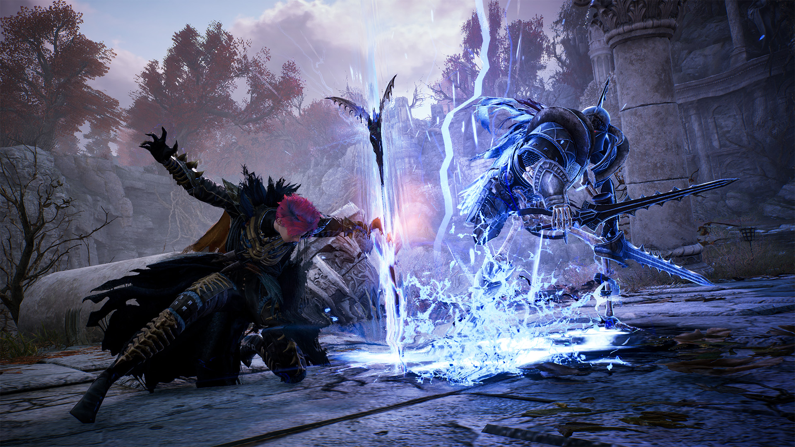
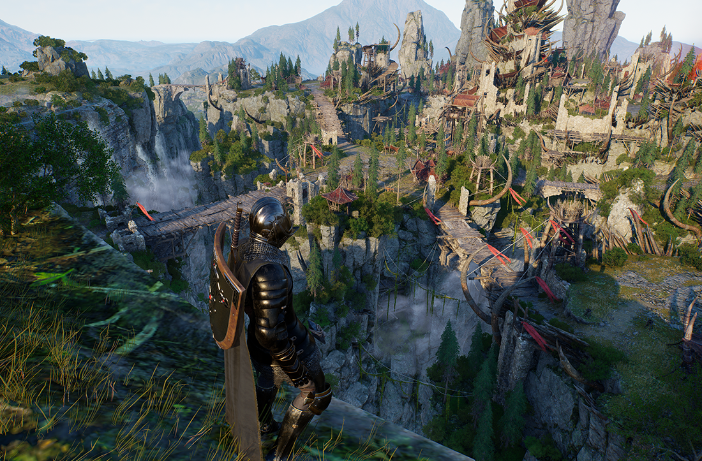
 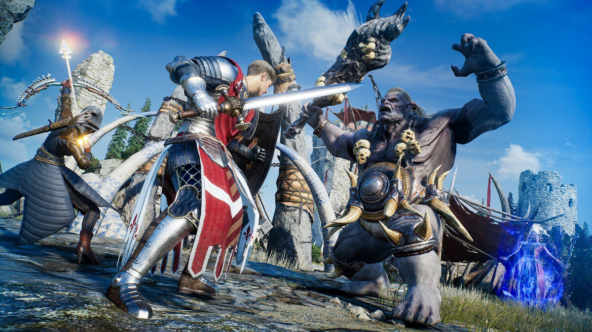
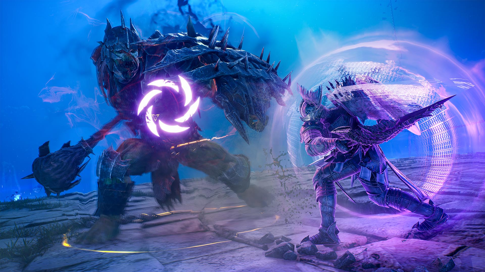
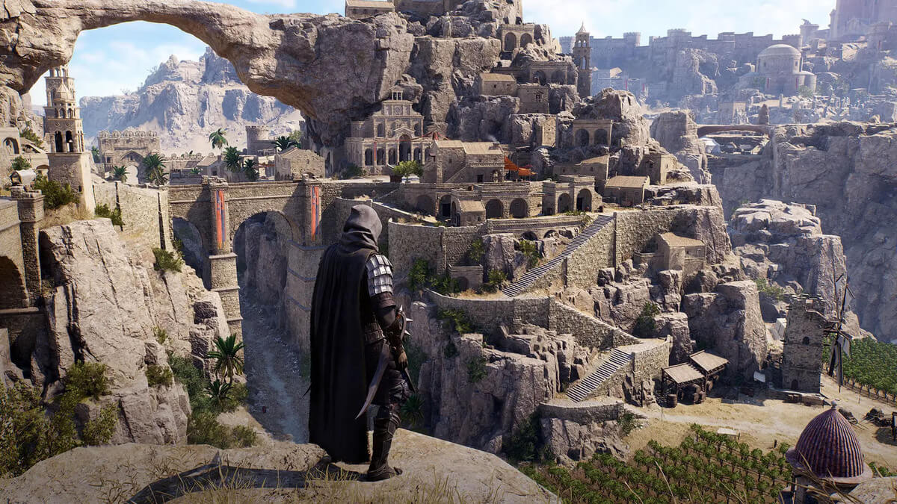
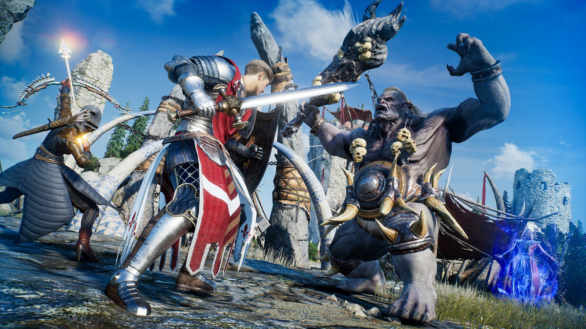
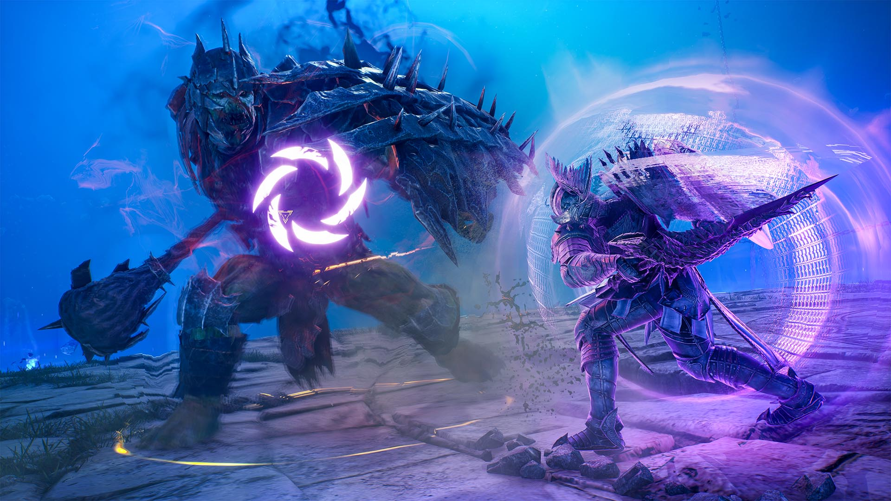
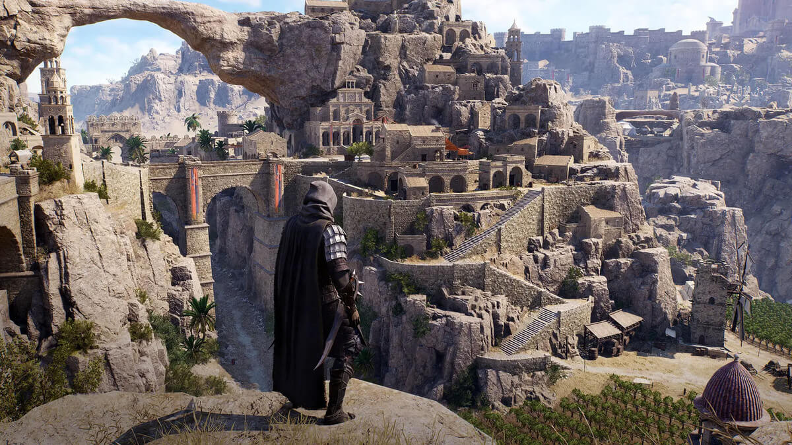
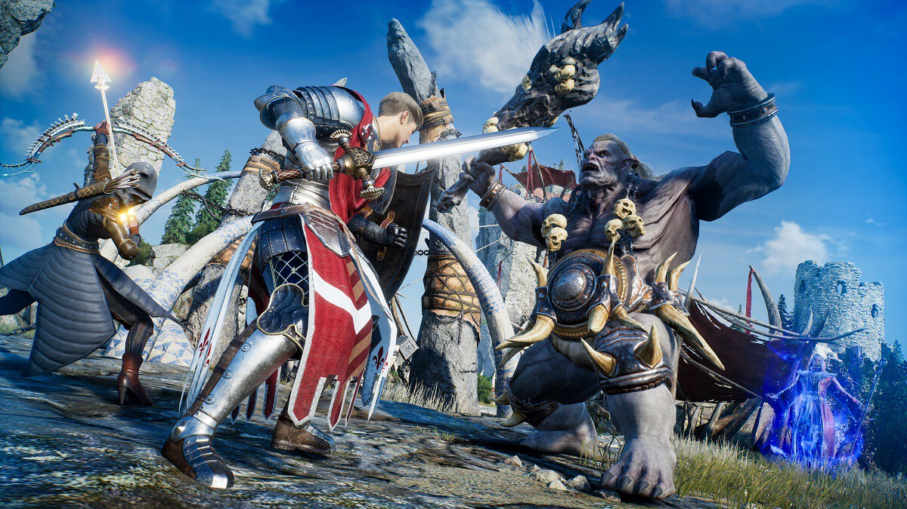
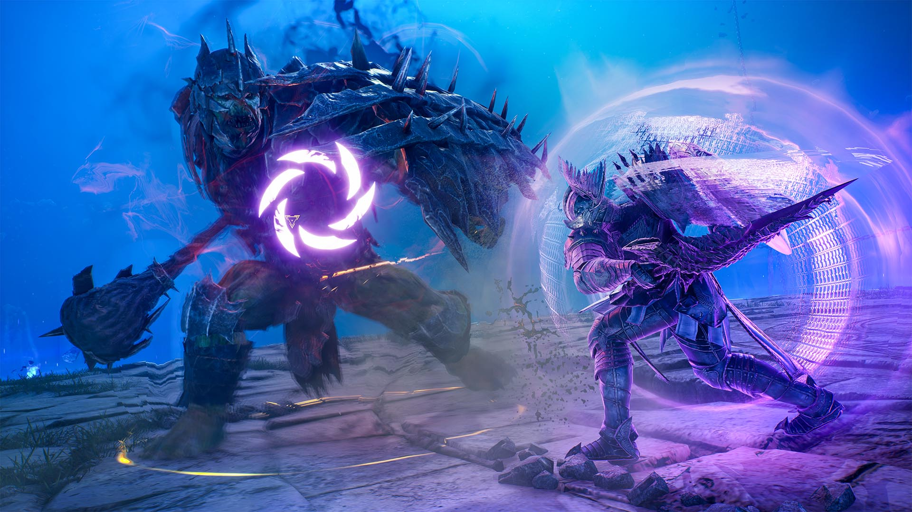
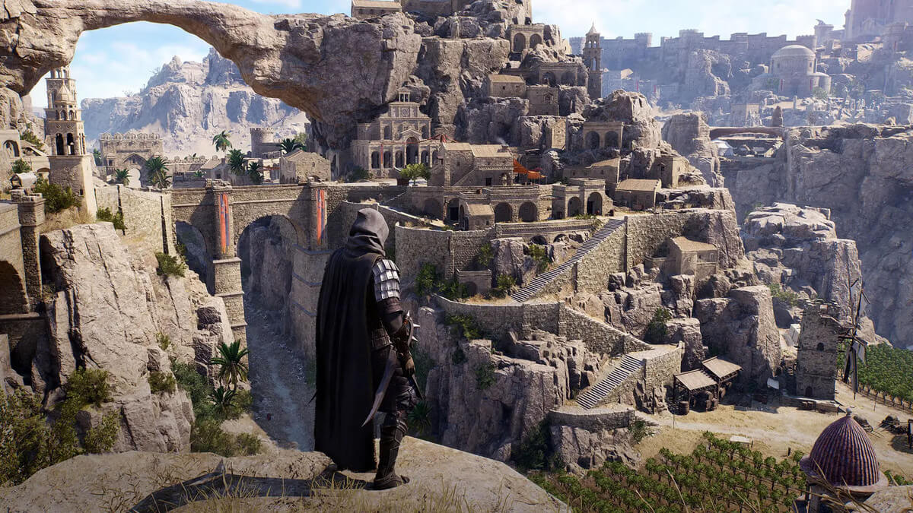